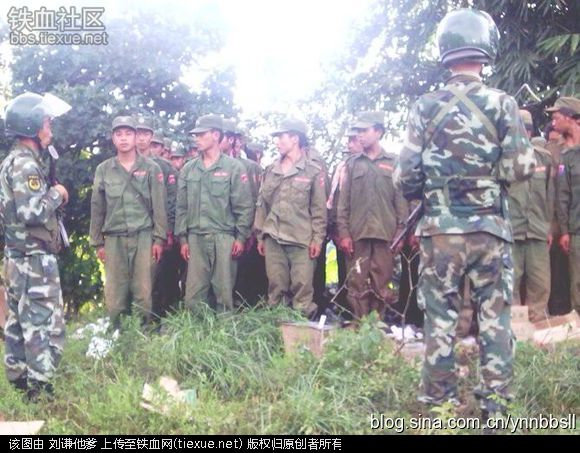
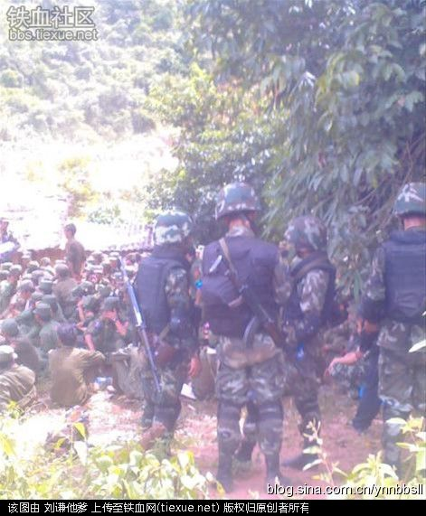
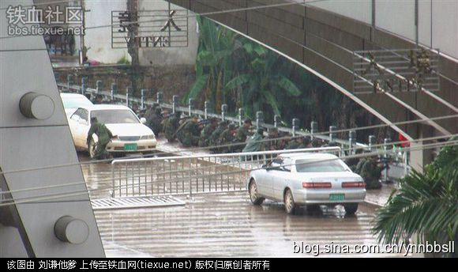
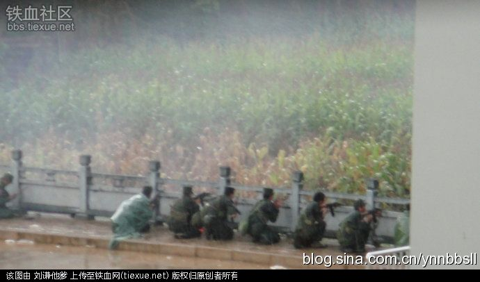
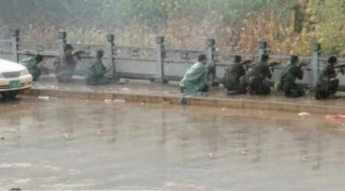
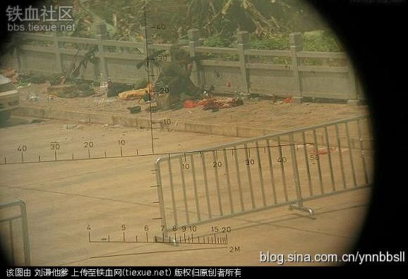

1965年，缅甸军队有史以来第一次进入果敢，从法律意义上讲，果敢直到这时才归缅甸控制。缅军的进入导致大缅族主义盛行，汉人顿时沦为二等国民，血气方刚的彭家声无法忍受，拉起一帮汉族弟兄上山、树起反奴役大旗，缅军随即进剿，彭家声寡不敌众退入中国，遂加入缅共成为缅共武装。
1968年1月，加入缅共的彭家声带兵向驻果敢缅军发起进攻，将缅军赶出果敢。彭在将缅军赶出果敢，与缅共密切合作时，发现缅甸共产党的行为与大缅族主义执政当局没有多大不同，果敢仍然是缅族人控制下的果敢，果敢华人在缅共领导人眼里仍是不能信赖的外番。
1989年3月11日，无法忍受缅共专制的彭家声宣告脱离缅共、归顺缅甸政府,缅共中央主席德钦巴登顶召开政治局会议，认定此举为“反革命叛乱”，由于缅共是建立在缅北少数民族武装基础上,没有自己的直属武装,无力镇压“叛乱”。佤邦鲍有祥随即配合彭家声,派兵包围了缅共中央所在地邦桑，将德钦巴登顶及缅共其他领导人“礼送出境”进入中国,彭家声和鲍有祥将50年历史的缅甸共产党送到了终点。于是,3月11日成了果敢特区成立日,同盟军311旅命名也由此而来。
随后，彭家声与缅甸总理钦钮达成《和平协议》，成立华人自治的果敢特区。相对而言，钦钮总理主持下的达成《和平协议》对果敢较为宽松, 从此,在彭家声统治下，果敢真正得到了自治。因为那时双方交好，同盟军也就逐渐放弃了武装斗争，同盟军人数最低时只有300人，当时的同盟军甚至可以扛枪自由出入下缅甸军管辖区。
缅共解体后，原缅共人民军一分为四，变成四股地方民族武装：果敢同盟军、佤邦联合军、掸邦东部同盟军、克钦民主军。四股民族武装结成“和平民主阵线”，承诺任何一个成员在遭缅政府军攻击时都要相互支持，共同对付缅甸政府军。正因为有了这个“和平民主阵线”，在长达20年时间里，缅甸政府军始终不敢对任何一个民族武装组织发动攻击，中缅边境得到了20年和平稳定时光。
2004年10月，与彭家声缔结和平协议的缅甸总理钦钮被军人集团废除，军人集团宣布：1989年钦钮与各民地武的停战谈判是私人行为，不能代表国家，停战协议无效。
2006年初，缅军政府要求国内各少数民族武装以“武器换和平”,要求彭家声带头交枪。军政府理由是：既然彭家声1989年带头脱离缅共，使国内17支反政府武装与政府达成和平协议，现在彭家声应该再次带头交枪，领导大家走和平道路,只有几支小部队接受改编(如丁英领导的克钦新民主军)，大多数民地武都不愿意接受改编,彭家声更是断然拒绝。
果敢人是历史上唯一没有留过辫子的汉族，没有经过满人对汉人血性的阉割，保留了汉民族自大唐传承下来的血性,彭家声的拒绝使缅政府下了动武的决心，缅北战争一触即发。中国政府并不愿意看到果敢汉人政权被消灭，同时也要维持与缅军政府的良好关系,希望事态和平解决，于是派驻缅武官访问果敢， 作了一个微妙的政治表态，缅政府产生忌惮，紧张局势得以解除。
2009年4月，于心不甘的缅甸军政府又向果敢提出了“部队整编”要求,目的就是要提出果敢不可能接受的要求，找到攻击果敢武装的借口。这一要求又遭到了彭家声的抵制, 彭家声深知,“大缅族主义”一直是缅甸国家基本政策，交枪就等于交命。
2009年6月，缅甸政府利用中国政府急欲修建“中缅石油管道”的心理，游说收买中国地方政府，获得了中国个别利益集团的支持承诺，一切准备完成后，军人政府决心杀鸡儆猴，准备向果敢同盟军发动武力攻击，策划了蓄谋已久的“88事件”。
2009年8月8日，缅政府驻果敢老街军分区17名军人穿上警察制服，冒充警察进行缉毒行动，实际上并未缉毒,而是突然搜查果敢军械修理厂,与同盟军发生冲突。由于缅警态度张狂、粗暴无礼, 同盟军将17名“缅警”缴械，关押在一个小屋里,后被人用手榴弹全部炸死。具体是何人所为，至今仍是一个迷案，同盟军对此表示否认，也有人称是白家和魏家为了激发彭家声与缅政府矛盾而暗中指扔手榴弹，企图嫁祸于同盟军，真相扑朔迷离、至今未解，此事件史称“88事件”。
2009年8月24日,缅军令白所成带领自己的部队包围了彭家声住处，试图抓捕彭家声，彭家声孙子带果敢安全部队控制住局面，将所有汉奸人员缴械。直到此时,彭家声还不想与白所成彻底决裂,出于 “给副司令一点面子”的大局考虑，彭德仁下令释放了白所成。
8月24日，彭家声派其弟彭家富从南伞进入中国，欲借道中国清水河口岸绕道南邓进入到佤邦，与佤邦商谈联合抗敌，彭家富进入南伞后就被中国临沧禁毒部门软禁，临沧禁毒部门人员告诉彭不要告诉中国安全部门、不要告诉中国军方、不要告诉朋友。在中国高层干预下，临沧禁毒部门被迫将彭家富释放，但不许从清水河口岸绕道南邓进入佤邦，只允许从127号界桩回果敢，而从127号界桩入果敢要想到南邓佤邦，就须穿过缅军控制地盘，明眼人一看便知，这是想将彭家富送给缅军。
8月27日，30名缅军前往杨龙寨，准备把守通向中国的道路,在杨龙寨被同盟军缴械，30名缅兵被关押起来。缅军发布了正式作战命令，在白所成配合下，缅政府军与同盟军终于爆发了大规模武装冲突。
缅军和白所成伪军多路向同盟军进攻，由于敌众我寡、汉奸作恶、指挥系统中断、事先防备不足，加之云南临沧地方政府一些部门的亲缅亲白立场,战争一开始,同盟军建制全部被打乱、乱成一团、溃不成军，唯一的优势就只剩下普通士兵的勇敢牺牲精神。
冲突刚开始，由中国镇康县供应的果敢市电就停了，此后三天都是停电状态，由于同盟军指挥命令通过手机发布，切断供电就等于无法充电，导致了同盟军在关键的三天里指挥系统失灵。
8月28日，缅军下令白所成派23名汉族士兵与缅军一起攻打同盟军老象塘阵地，这些已投降缅军的汉族“伪军”良心未泯，不愿开枪打自己的昔日兄弟， 23名汉族士兵当即被缅军机枪全部打死,尸横黄土、鲜血流浸在落在地下的弹壳上, 缅军机枪口冒着烟。白所成知道后沉默不语、一言未发。
同盟军高层决定，为保存民族火种，避免汉人生命财产遭受更大损失，部队退入中国，将武器装备交给中国武警, 是谓“宁向同胞缴械、不对外族投降”。8月29号中午,在中国南伞边检站中方一侧出现了这样一幕:近千名身穿军服的同盟军士兵蹲坐在地下,一旁是被收缴的武器,数百名中国武警荷枪实弹、全副武装地站在同盟军士兵身边，十多辆警车和装甲车在一旁警戒。

一名同盟军军官向身边的一名中国武警少尉要一支香烟，少尉友善地将一盒香烟全部分发给蹲在地下的同盟军士兵。同盟军官起身拍拍少尉肩膀,感激地竖起大拇指，中国少尉也拍拍同盟军官肩膀, 也竖起了大拇指,双方都一言未发,但彼此心里已经领会了一切。突然，同盟军官哭了, 蹲坐地下的一排同盟军士兵跟着哭了, 中国少尉也哭了。面对着一片哭声，远处的总指挥中国上校只觉得喉咙发酸。

傍晚,最后一支边打边撤的同盟军连队抵达南伞口岸, 缅军一直追到南伞口岸,在口岸外架起了机枪和迫击炮,中国口岸已打开闸门迎接同胞。这原本是一个整编连,开战三天从120人打剩60人。本可跨一步进入中国,这半个连的汉族部队却拒绝执行上级撤入中国的命令,坚决与追兵展开枪战。

60名汉族士兵就在离边境线仅5米的边境桥上与缅军交战,连长已于昨日战死，此时,并无长官下达继续作战的命令，而只要在地上滚几下就可以到中国，这样就可以活下来。

但是，没有一个士兵逃入中国，也没一个士兵抱有活下去的希望，他们以口岸大桥一侧的石栏板为依托,把枪口伸出石栏板中孔，顽强向缅军射击。一个同盟军士兵倒下了，又一个倒下，又一个，又一个……，口岸内的中国武警接到“不许干预”的命令，眼睁睁地看着同胞们一个个中枪丧命。

汉族士兵躺下了,枪却还卡在大桥石栏板的中孔里, 每倒下一个士兵,大桥石栏板的中孔里就留下一支孤零零的步枪,枪口依然对准敌人。一个小时过去了,大桥上只剩下一名继续顽抗的士兵和59只卡在石栏板中孔的没有主人的步枪，桥面上满是汉族士兵尸体的鲜血。

在中国一则，中国武警按下相机快门，留下了60名汉族士兵今生最后的身影,也留下了悲壮的历史。
最后一名抵抗者的子弹打完了,又从战友尸体上取下子弹和手雷继续战斗,5米外的中国武警大声叫他马上跑过境来,而他丝毫没有撤退的意思, 独自一人与对面数百名缅军对抗了最后10分钟。
随着最后那名汉族士兵中弹倒下，西边山岭上的夕阳收下了最后一抹殷红而悲壮的霞光，黯然落下山去, 枪声停了,缅军收兵了,空气中飘散着一股硝烟味和血腥味,一切都结束了。
一名中国武警士兵与躺地死去的一名同盟军士兵曾是朋友，看见好友被打死欲跑上前去抱尸，被中尉军官喝止，武警士兵忍不住跪在地下对着近在咫尺的已死朋友大哭起来，一旁的其它中国兵也跟着默默流泪。终于，中尉军官的泪水也流了下来。中国军人们就这样默默站着看着，不断流着眼泪……
夜幕中, 北方祖国吹来一阵晚风,风中仿佛夹杂着那首《送别》的歌声:“长亭外,古道边,芳草碧连天,晚风拂柳笛声残,夕阳山外山……”。此刻的晚风没有拂柳,而是轻轻拂过了60名汉族年轻士兵带血的脸庞,那是北方母亲给60个孩子最后的送别。
72年前北京卢沟桥出现过同样的一幕，29军汉族士兵把枪口伸出卢沟桥石栏板中孔，顽强向日军射击,誓死不退。今天，汉族士兵面对的是二战中与日军并肩作战的缅甸军人，同样, 他们誓死不退！
8月29日入夜，果敢完全沦于缅军之手，同盟军全线溃败，战斗仅三天就结束了，3万华人难民逃入中国境内，逃入中国的同盟军士兵放下武器、脱下军装，换上工厂工作服，中国政府按难民身份对待,保障生命安全和基本生活。果敢彻底落入了异族之手，这是果敢的耻辱,也是整个中华民族的耻辱。
彭家声在1989年建立了缅甸掸邦第一特区，历时20年后，在2009年“88事变”中被轻易推翻了。中国家门口的汉人被外人狠揍了一顿，无论起因为何和境内境外，这在任何一个国家都会让母国伸以援手，但是，中国仅是收容难民，让同盟军撤入境内，媒体没有报道、国民没有捐助、政府没有挺果。一切悄然发生，又悄然结束,给13亿人民的感觉是什么也没发生过。